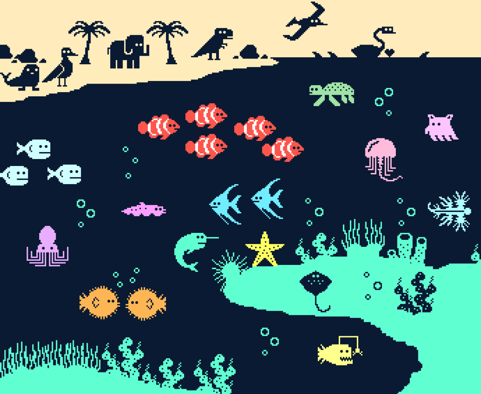
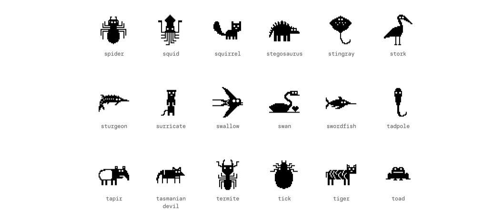
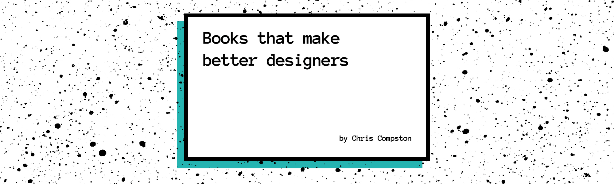
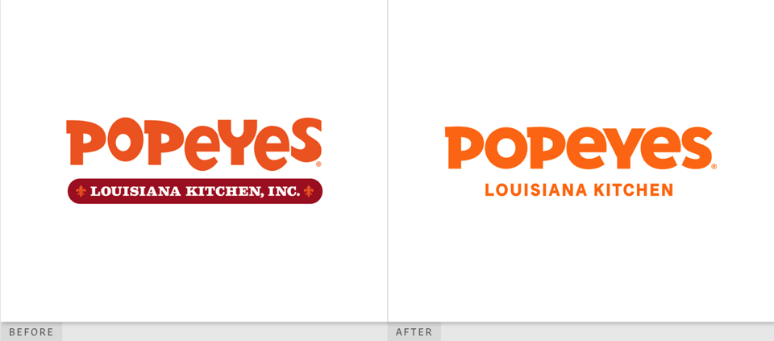
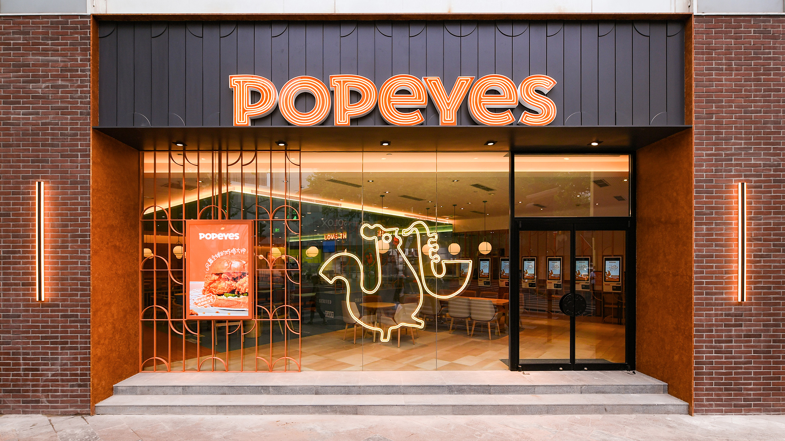

设计周刊 Design Weekly #010
🏷 设计灵感
像素风格的野生动物的图标
一套包含 240 种野生动物的图标：鸟类、哺乳动物、爬行类、昆虫、两栖类、鱼类、无脊椎动物、神话类、恐龙等（植物！）


🏷 设计书籍
这不是你常见的设计书籍清单
https://uxdesign.cc/books-that-make-better-designers-603ec781be20
作为一名设计师，你可能没有接触过的书籍清单，但其中一些可能对你的职业生涯有决定性影响。

🏷 设计工具
Artify 一个新的设计平台
Artify 可以 web 端编辑，内置很多素材：3D 插画、图标、logo 等。官网可以看到很多作品。

🏷 设计新闻
Jones Knowles Ritchie 为 Popeyes 公司设计的新标志
Jones Knowles Ritchie(JKR) ，一家获奖无数的品牌设计公司。在英国成立了超过26年，以伦敦为总部，分别在纽约，新加坡拥有分公司。在国外备受客户及同行认可。 于2015年，在上海成立了第一家在华分公司。
我们相信设计，专注于设计，专注于通过以设计为媒介来实现品牌的成长，亦相信设计的力量能令生活变得更好。—— JKR
Popeyes成立于1972年，是一家提供独特的新奥尔良风格的快餐店，以麻辣鸡肉、鸡肉卷、炸虾和其他地区性的菜品为特色。随着全球范围内的大扩张，Popeyes 推出了由Jones Knowles Ritchie设计的新形象。


🏷 随便看看
有没有想过，你是一个什么样的设计师？
https://uxdesign.cc/what-kind-of-a-designer-are-you-236c2ed16f5f
每个设计师都有不同的方法、特质和技能，但也有很多共同之处。 设计师 Diana Malewicz 创造了这个小测试，把不同类型的设计师进行测试。 你有没有想过，你是一个什么样的设计师？来参加这个速测，写下你的答案，看看你的成绩吧。